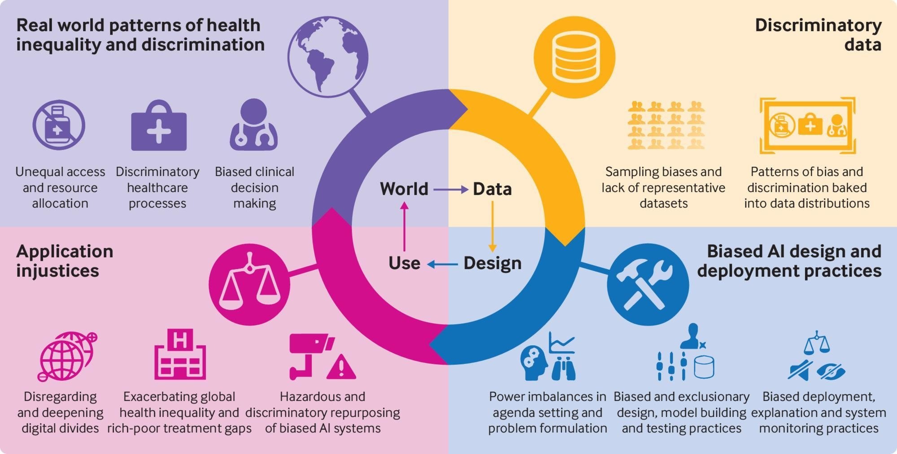
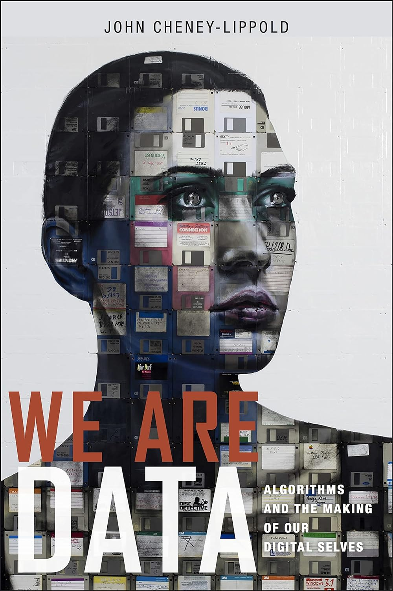
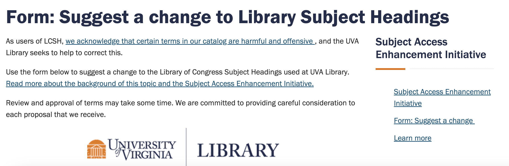

IS 505 Information Organization and Access
2024-03-05
Group A-K (April 2)
Avouris, Cassiani
Barrett, Abigail
Boyle, Nora
Brown, Alyssa
Carrithers, Marguerite
Ding, Weiyu
Eggimann, Kelsey
Faro, Anika
Good, Amanda
Harper, Evalyn
Harrington, KeSean
Kedzierski, Haley
Kerr-Dennhardt, Delia
Group L-S (April 9)
Ten common characteristics of big data
[Our] corpus contains over 500 billion words, in English (361 billion), French (45 billion), Spanish (45 billion), German (37 billion), Chinese (13 billion), Russian (35 billion), and Hebrew (2 billion) (Michel et al., 2011)
Ceren Budak and Duncan Watts (2015) were able to do more by using the always-on nature of Twitter to study protesters who used Twitter before, during, and after the event. And, they were able to create a comparison group of nonparticipants before, during, and after the event
even though some big data sources are nonreactive, they are not always free of social desirability bias, the tendency for people to want to present themselves in the best possible way
First Published in 2019
big data tends to be missing three types of information useful for social research: demographic information about participants, behavior on other platforms, and data to operationalize theoretical constructs
Inaccessible - Data held by companies and governments are difficult for researchers to access
Non-representative - Non-representative data are bad for out-of-sample generalizations, but can be quite useful for within-sample comparisons
Drifting - Population drift, usage drift, and system drift make it hard to use big data sources to study long-term trends
Algorithmically confounded - Behavior in big data systems is not natural; it is driven by the engineering goals of the systems
Algorithmic confounding means that we should be cautious about any claim regarding human behavior that comes from a single digital system, no matter how big
Dirty - Big data sources can be loaded with junk and spam
Sensitive - Some of the information that companies and governments have is sensitive
It turns out to be quite tricky to decide what information is actually sensitive.
In 2006 Netflix released 100 million movie ratings provided by almost 500,000 members and had an open call where people from all over the world submitted algorithms that could improve Netflix’s ability to recommend movies.
Before releasing the data, Netflix removed any obvious personally identifying information, such as names.
But, just two weeks after the data was released Arvind Narayanan and Vitaly Shmatikov (2008) showed that it was possible to learn about specific people’s movie ratings.
Even though an attacker could discover a person’s movie ratings, there still doesn’t seem to be anything sensitive here.
While that might be true in general, for at least some of the 500,000 people in the dataset, movie ratings were sensitive.
Sensitive
Here’s how the problem was expressed in this lawsuit
“[M]ovie and rating data contains information of a … highly personal and sensitive nature. The member’s movie data exposes a Netflix member’s personal interest and/or struggles with various highly personal issues, including sexuality, mental illness, recovery from alcoholism, and victimization from incest, physical abuse, domestic violence, adultery, and rape.”
It occurs when a computer system reflects the implicit values of the humans who are involved in collecting, selecting, or using data
In 2008 Google and CDC launched a new interface called Google Flu Trends to monitor influenza-like illness (ILI)
It relied on data mining records of flu-related search terms entered in Google’s search engine, combined with computer modelling
It estimated almost exactly matched the CDC’s own surveillance data over time — and it delivers them several days faster than the CDC can
In 2013, US flu season seems to have confounded its algorithms
It estimated for the Christmas national peak of flu is almost double the CDC’s (see ‘Fever peaks’), and some of its state data show even larger discrepancies
It was not the first time that a flu season has tripped Google up
In 2009, Flu Trends had to tweak its algorithms after its models badly underestimated ILI in the United States at the start of the H1N1 (swine flu) pandemic — a glitch attributed to changes in people’s search behaviour as a result of the exceptional nature of the pandemic
Lamba, M., Madhusudhan, M. (2022). Text Data and Mining Ethics. In: Text Mining for Information Professionals. Springer, Cham. https://doi.org/10.1007/978-3-030-85085-2_11
Read more here: https://cte.ku.edu/addressing-bias-ai
(Metaphors in HCI)Lamba, M., Madhusudhan, M. (2022). Text Data and Mining Ethics. In: Text Mining for Information Professionals. Springer, Cham. https://doi.org/10.1007/978-3-030-85085-2_11
FairML, IBM AI Fairness 360, Accenture’s “Teach and Test” Methodology, Google’s What-If Tool, and Microsoft’s FairlearnLamba, M., Madhusudhan, M. (2022). Text Data and Mining Ethics. In: Text Mining for Information Professionals. Springer, Cham. https://doi.org/10.1007/978-3-030-85085-2_11

LOC does not represent marginalized groups of people
Descriptive practices have been based on systems and standards ingrained with white supremacy, misogyny, and homophobia
Much of this descriptive work contains insensitive, outdated, or inappropriate language that reflects the harmful biases built into descriptive systems
A. The ‘straight white American man’ assumption
Without gender, race or geographic qualifications, “Astronauts” can be assumed to mean white American men in terms of library subjects
Official Library of Congress subject headings involving astronaut. Amanda Ros. CC BY
Nurses were divided equitably for both Male and Female
Under Prostitutes, there was only “Male prostitute” SH, revealing the generic assumption that most prostitutes are female
Official Library of Congress subject headings for three professions traditionally perceived as female. Amanda Ros. CC BY
Ethnicity
In late 1970s, “Afro-Americans” replaced “Negroes”
This was in turn replaced by “African Americans” or “Blacks” in 2000
Medical Condition
People with mental disabilities” replaced “Mentally handicapped” and “Retarded persons”Gender
Gender identity is also an area where positive changes have been made
LGBT subjects have been distinguished and classed under “Sexual minorities” since 1972, rather than being under the subject “Sexual deviations”. “Sexual deviations” does not even exist as a subject heading anymore
In December, the Library of Congress changed the broader term from “sexual minorities” to simply “persons”
2023-03-27
Libraries are making efforts to redress this problematic history
Statement on Harmful Language in Cataloging and Archival Description by University of Virginia Library
They are actively removing the harmful language in their legacy records
They acknowledge that many LCSH headings are biased and harmful
They are supporting efforts underway throughout the profession to change these terms, and are also taking a localized approach to replacing some harmful and racist terms with acceptable local headings in their own catalog
When describing some archival collections, they include a brief note to patrons alerting them to harmful or pejorative language

Name
Name
Spring Break: 9-17 March
Weekly Discussion Post (Week 10):
March 17, 2024 (Sunday) by 11:59 PMProposal topic for Final Assignment:
March 19, 2024 (Tuesday) by 11:59 PM
Start Prepping for:
Open Office Hours: Mondays 1-2 PM; Wednesdays 2-3 PM
Dr. Manika Lamba
Email: manika@illinois.edu
Dr. Liliana Giusti Serra
Email: lilianag@illinois.edu